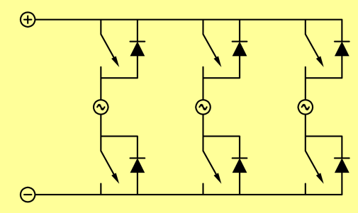
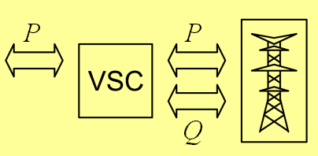
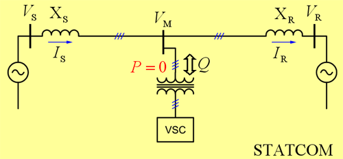
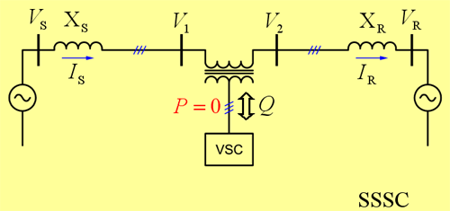
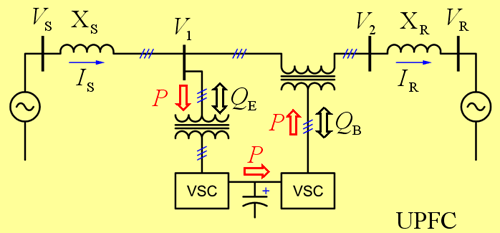

| Welcome! |
| About us |
| What is FACTS? |
| What is HPFC? |
| Downloads |
| Contact us |
| Last Updated |
 |
 |
The Symmetrical
Hybrid
Power
Flow
Controller
A new technology for Flexible AC Transmission (FACTS)
Introduction to FACTS
The main purpose of this page is to set the stage for introducing the HPFC through the comparison with other, better known, FACTS controllers. To facilitate this comparison we review the topologies of the three widely known FACTS controllers, namely the STATCOM, the SSSC, and the UPFC. Since all of these controllers are converter based, we start by reviewing the basics of the voltage-sourced converters from the perspective of their application in the transmission system.
For completeness, however, we also provide some history and a few basic definitions.
Finally, if you are seeking a comprehensive and authoritative reference in this field, we wholeheartedly recommend that you start with the book by N. G. Hingorani and L. Gyugyi, "Understanding FACTS Concepts and Technology of Flexible AC Transmission System", IEEE Press 1999. Alternatively, you can consult an excellent survey paper by Dr. Hingorani titled "Flexible ac transmission", published in the April 1993 edition of IEEE Spectrum.
Table of Contents
- So, just what is "FACTS"?
- Basics of Voltage-Sourced Converters
- STATic COMpensator (STATCOM)
- Static Synchronous Series Compensator (SSSC)
- Unified Power Flow Controller (UPFC)
- References
1 So, just what is "FACTS"?
According to this Author's research, the acronym FACTS was first introduced by Dr. Hingorani, at the joint APC/IEEE luncheon speech on April 19, 1988 [1].
Allow me to introduce a new concept of a thyristor-assisted ac power system. I have called this concept
"Flexible AC Transmission System" or FACTS.
...
It (the concept of FACTS) is a collection of thyristor based controllers, including phase shifters,
advanced static VAR compensator, dynamic brake, modulator series capacitor, load tap changer,
fault current limiter, and perhaps other that have yet to be invented.
N. G. Hingorani 1988 [1]
Today, the concept of FACTS includes not only "thyristor based controllers" but all "power electronic-based" and other "static controllers". The 1999 definitions are:
Flexibility of Electric Power Transmission:
The ability to accommodate changes in the electric transmission system or operating
conditions while maintaining sufficient steady-state and transient margins.
Flexible AC Transmission System (FACTS):
Alternating current transmission system incorporating power electronic-based and
other static controllers to enhance controllability and increase power transfer
capability.
FACTS Controller:
A power electronic-based system and other static equipment that provide control of
one or more AC transmission system parameters.
"Understanding FACTS" [2]
So, speaking in loose terms, the big idea is to connect some fancy new equipment to the transmission system and use it to control the flow of power through the system.
That sounds reasonable - why isn't it done already?
Well, the technology is relatively new and therein lies the problem. First, demonstrated FACTS availability is on order of 99.5%, and that is deemed insufficient by many utilities. Then, since the technology is new, it has not been fully incorporated into software tools for system planning and dispatching. As a result, there isn't yet a straightforward way to build a value story for FACTS.
To build a value story for FACTS we need software tools that would be able to select both the optimal types and the optimal locations of FACTS controllers within the system, and then compare the investment required with the benefits arising from reduced fuel costs, reduced system congestion, reduced emissions, increased utilization of renewable sources, increased system security...
Sounds nice? Of course - but we don't have these tools, and it will likely take us a while to develop them, and then a while longer to start using them. And meanwhile, poor FACTS devices wait for the better times ;)
Well then, with all these impediments, why should anyone think that FACTS controllers have the future? It is really quite simple - our transmission infrastructure is falling behind our needs, and - whether we like it or not - we will have to get creative.
In the past, transmission systems were conservatively designed with large stability
margins and the then-available dynamic compensators, ... , were rarely required.
In recent years, energy, environment, right-of-way, and cost problems delayed the
construction of both generation facilities and new transmission lines. This has
necessitated a change in the traditional power system concepts and practices;
better utilization of existing power systems has become imperative.
L. Gyugyi 1988 [3]
And it is the emerging field of FACTS that offers the most practical answers for this challenge.
So, let us go back to the task at hand and look at some of the FACTS controllers and the power electronic-based equipment that these controllers are built with...
One of the most commonly used power electronic-based building blocks is a voltage-sourced converter (VSC). Let us now review the basic concepts of VSCs with respect to their application in a transmission system.
2 Basics of Voltage-Sourced Converters
A basic building block of any voltage-sourced converter (VSC) is the three-phase converter bridge. One commonly known configuration for a three-phase bridge is shown in Fig. 1. The bridge has two DC terminals (indicated by "+" and "−") and three AC terminals ("~") in the mid points of the converter legs. By controlling the states of switches in the legs we can produce arbitrary voltage waveforms at the AC terminals.

| Fig. 1 | A three-phase converter bridge - the basic building block of a VSC |
Now, when a VSC is interfaced to a transmission system it has to: (i) operate at the line frequency, and (ii) produce a balanced set of sinusoidal voltages. Therefore, a VSC coupled to the transmission system has only two control degrees of freedom - it can vary the magnitude and the phase angle of its output voltage relative to the system voltage.
These two control degrees of freedom can be mapped into freedom to exchange active and reactive power with the transmission system. The amount of exchanged reactive power is limited only by the current capacity of the converter switches, while the active power coupled to (from) the line has to be supplied from (delivered to) the DC terminals, as shown symbolically in Fig. 2.

| Fig. 2 | A VSC interfaced to a transmission line - P, Q exchange |
Let us now look at the three exemplary FACTS controllers.
3 STATic COMpensator (STATCOM)
The STATic COMpensator (STATCOM) uses a VSC interfaced in shunt to a transmission line. In most cases the DC voltage support for the VSC will be provided by the DC capacitor of relatively small energy storage capability - hence, in steady state operation, active power exchanged with the line has to be maintained at zero, as shown symbolically in Fig. 3.

| Fig. 3 | STATCOM - A VSC interfaced in shunt to a transmission line |
With the active power constraint imposed, the control of the STATCOM is reduced to one degree of freedom, which is used to control the amount of reactive power exchanged with the line. Accordingly, a STATCOM is operated as a functional equivalent of a static VAR compensator; it provides faster control than an SVC and improved control range.
4 Static Synchronous Series Compensator (SSSC)
The Static Synchronous Series Compensator (SSSC) uses a VSC interfaced in series to a transmission line, as shown in Fig. 4.

| Fig. 4 | SSSC - A VSC interfaced in series to a transmission line |
Again, the active power exchanged with the line has to be maintained at zero - hence, in steady state operation, SSSC is a functional equivalent of an infinitely variable series connected capacitor. The SSSC offers fast control and it is inherently neutral to sub-synchronous resonance.
5 Unified Power Flow Controller (UPFC)
The Unified Power Flow Controller (UPFC) combines the above two compensators into one. The DC terminals of the two underlying VSCs are now coupled, and this creates a path for active power exchange between the converters. Hence, the active power supplied to the line by the series converter, can now be supplied by the shunt converter, as shown in Fig. 5.

| Fig. 5 | UPFC - Coupling of converters' DC terminals offers a fundamentally different range of control options |
This topology offers three degrees of freedom, or more precisely - four degrees of freedom (two associated with each VSC) with one constraint (active powers of the VSCs must match). Therefore, a fundamentally different range of control options is available compared to STATCOM or SSSC. The UPFC can be used to control the flow of active and reactive power through the line and to control the amount of reactive power supplied to the line at the point of installation.
Perhaps the only downside of this topology is that it is entirely converter based, i.e., it uses the converters to supply both active and reactive power. Let us explain...
For efficient operation transmission systems need distributed reactive power support. This is commonly accomplished by installing banks of capacitance at strategic locations within the system, and by switching these banks in and out as needed. The UPFC can make limited use of such hardware; by definition it uses the shunt converter to supply the active power coupled by the series converter, and once the shunt converter is in place it is also used to supply all of the needed reactive power.
Conceptually, this feature seems advantageous as we are now getting "the free STATCOM" to supply the reactive power - the reality however is that this STATCOM is NOT FREE after all! In fact, in cases where the reactive power support exists, an argument could be made that by requiring the STATCOM we are forcing the owner to decommission a "perfectly good" battery of shunt capacitors, and that is not the kind of news many owners like to hear.
Our proposed new controller, the HPFC, offers performance characteristics similar to those of the UPFC. The key benefit of the new topology is that it fully utilizes existing equipment (switched capacitors or SVCs), and thereby the required ratings of the additional converters are substantially lower than the ratings of the comparable UPFC.
6 References
- N. G. Hingorani, "High Power Electronics and Flexible AC Transmission System", IEEE Power Engineering Review, July 1988.
- N. G. Hingorani and L. Gyugyi, "Understanding FACTS, Concepts and Technology of Flexible AC Transmission System", IEEE Press, 1999.
- L. Gyugyi "Power Electronics in Electric Utilities: Static Var Compensators", Proceedings of the IEEE, Vol. 76, No. 4, April 1988.
Welcome | About us | What is FACTS? | What is HPFC? | Downloads | Contact us